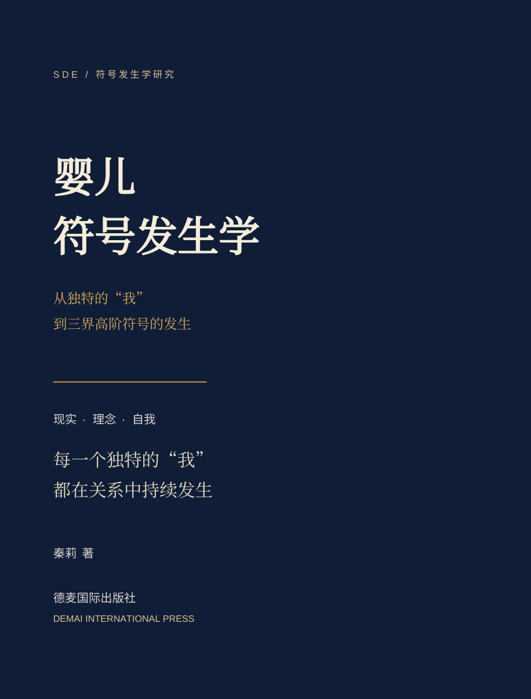

德麦国际专著 · 第417卷
婴儿符号发生学
从独特的“我”到三界高阶符号的发生
秦莉 著 · US$23.00
从一声哭、一次伸手与一段回应出发，探讨婴儿独特的“我”怎样在三界纠缠中持续发生。十二编六十章，约24.7万正文汉字；涵盖出生历史、感觉行动、爱的发生、跨文化照护、理论对话与科学验证。含阅读、六十章学习包和智能问对「初绽」。
ISBN待出版社书号台账核定。当前提供在线阅读版。
三个入口
阅读全书 · 六十章学习包 · 与初绽问对
PDF · v1.1逐页精修版 · 431页 · Word · v1.1 · 章节目录
三轮AI辅助审校；原典核验边界保留，不冒充独立同行评审。